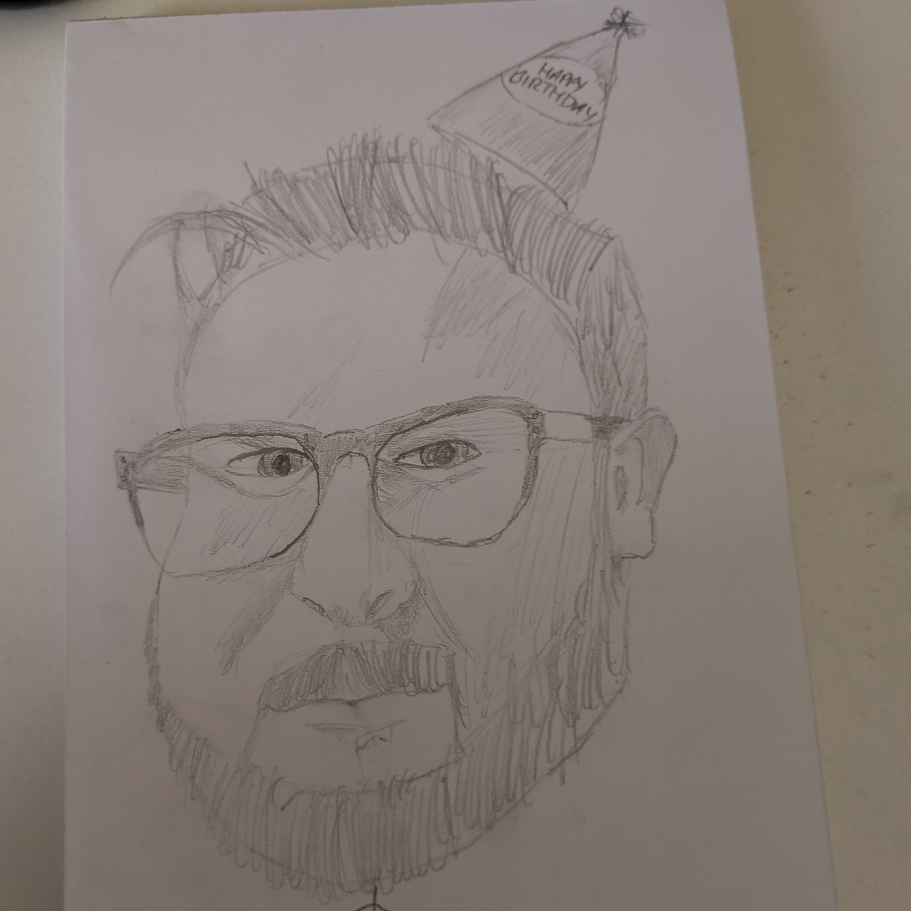

I’ve Been Reading: Portraits of Decay by Carson Winter
This was a fun one (insofar as bleak, nihilistic weird horror can really be said to be ‘fun,’ anyway). While reading Portraits, I was concurrently working my way through Corpsemouth and Other Autobiographies by the esteemed (deservedly so) John Langan, and it’s my humble opinion that the two books make a lovely pair of bedfellows. After reading these two volumes, it seemed appropriate to take a little time to reflect on them. I’ll cover Portraits first, and try to get some words down about Corpsemouth in the next couple of weeks.
This isn’t going to be a straight-up review, more just thoughts and reflections, but in the interest of disclosure I’ll mention that I might be a little biased here due to the fact that I’ve known Carson for some years and we’ve even collaborated before. Honestly though, everybody who writes short-form horror kinda knows each other to some degree so I’ll charge on regardless.
I got the ebook, and a part of me is considering ordering a paperback just to have it on my shelf. The cover art is an inverted, cursed-looking self portrait done by the author (who looks at least 15% less cursed ordinarily). In an age of genAI-infected visual media, a raw expression of human creativity on the front of a book feels like the right move. The imperfections of the piece really highlight one of the big themes of the book, that of human fallibility. There are no epic heroes here, rather ordinary folks trying to survive in malicious worlds.
I decided to draw my own cursed picture of Carson.
The stories are grouped into three sections. Section 1, Who We Are, begins with The Harried Man. It’s a strange little story that tugs at you. I really vibed with this; it was a strong start to the collection and gives a nice gentle-ish introduction to Carson’s neo-Ligottian style. This first clutch of stories deals with themes of identity and personal history, culminating in the story that first convinced me Carson was one to watch several years ago; In Haskins. This story interrogates social roles/norms in a slightly absurdist fashion. I think Kafka would be proud. That’s not to say you should skip the other stories in this section, of course. The Museum of Lost Things in particular is not to be missed.
Section 2 is titled Who We Wish To Be and the common thread I found myself tugging on is that of aspiration turned bad. There’s a sort of postmodern, savvy air to this middle section. Subtle notes of creepypasta in the first story (We Can Only Grow in the Dark) – albeit without the characteristic deliberate amateurishness for which creepypasta is known, a couple of lost media tales (Zero Boundaries Podcast: Episode 182 and Alive and Living(Pilot)), and a medieval-set story that deals with the perils of celebrity. It feels incredibly current. I’d say that this is the most vibrant section of the collection, the most energetic. Winter excels when he’s in conversation with modern culture and the online horror scene.
Finishing up, we’ve got What We Will Become as the third section. These stories deal with loss and transformation. This last part of the book is perhaps the capital-W Weirdest of the three, with stories such as The Children of the Event and 4633 Memory Stick (Phone Use Model 6A) fitting comfortably into the New Weird genre. The Mushroom Men is the standout here for me, a mind-bending story about loss and…quantum physics, I think? Feel like I’d have to go off my meds for a few days to really get it, and unfortunately I can’t afford to miss work. I’ll have to sit here content in my confusion, which I’m fairly sure is the point anyway.
The final story’s interesting. It’s the most Ligotti-esque of the collection, in my opinion. It could, potentially, serve as a decent gateway drug to Thomas Ligotti works such as those found in Teatro Grottesco. It feels as though it’d be very much at home there but Carson’s style is a little more approachable than Ligotti. That aside, the imagery in this story is fantastically strong. It finishes on a bleak note but leaves you with plenty to chew on. A fitting end, I think.
Overall I’d say this collection does a good job of displaying Carson Winter’s range. I really enjoyed myself from start to finish and I’d thoroughly recommend this to anyone with a hankering for weird horror.
That'll be all from me for now, so toodles.
Antony F.